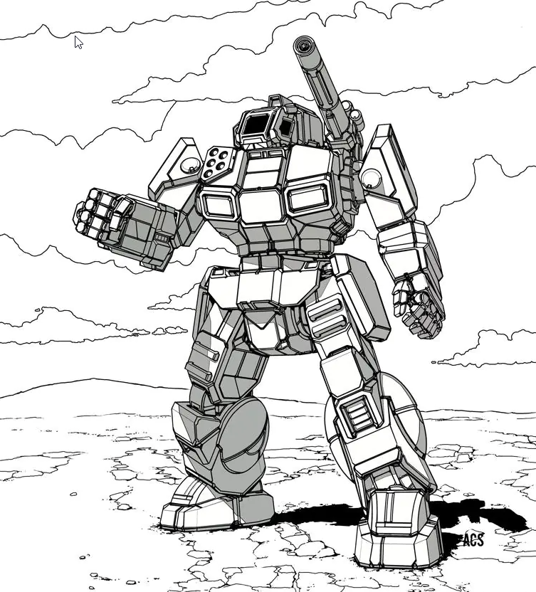

Appearance
Grayson Death Carlyle is a tall and slender man with blond hair and gray eyes.
History
Early life
Grayson Carlyle was born on Calaeras[4][5] as the son of Captain Durant Carlyle, the Commanding Officer
of Carlyle's Commandos, a House Steiner BattleMech lance. Therefore throughout his whole youth he was
groomed to take his father's position someday and at the age of ten he formally joined the unit as a
MechWarrior apprentice. Shortly after the death of his mother the Commandos were sent on garrison duty
to Trell I in 3019. Grayson's life would change abruptly in 3024 when a mysterious bandit force attacked
the Commandos, shattered them and drove the survivors off planet. As the only member of his unit left on
the planet Grayson's only thought was to take revenge for his father's treacherous death by the bandit
leader's Marauder. His astonishing success against several light BattleMechs while he was on foot deeply
impressed the planetary militia and the government, which thereafter offered him a job to set up a 'Mech
force as defense against the bandits. Carlyle started with the recruitment of an enemy MechWarrior, who
was taken prisoner during the attack, called Lori Kalmar, for his new Trellwan Lancers. Under Grayson's
skilled command the Lancers managed to achieve additional victories and finally uncover the invaders'
identity as a special force of Duke Hassid Ricol of the Draconis Combine. Ricol's intention was to
arrive with a second force and "rescue" Trell I's population from the bandits to secure a safe haven for
further incursions into the Lyran Commonwealth. This discovery instilled in Grayson a great sense of
hate for the Combine. At first the situation got even worse when Ricol arrived with a company of heavy
BattleMechs and the Trell government was overthrown by Combine collaborators. But finally the Lancers
managed to inform the Commonwealth by hijacking a JumpShip and after Ricol was unable to destroy
Carlyle's forces in a final battle, the Duke was forced to withdraw his troops off planet. Grayson on
the other hand had to learn that his desire for revenge could be dangerous, especially for his
relationship with Lori, when he was fighting against his father's murderers instead of rushing to her
rescue. Though he was not able to kill Ricol or the pilot of the Marauder, Grayson's desire was stilled
for the moment and he left the world with the remains of the Lancers, that swore allegiance to him to
create a new mercenary unit: The Gray Death Legion.[6]
As Commander of the Gray Death Legion
In 3028, on the eve of the Fourth Succession War, Carlyle's Gray Death Legion discovered the Helm Star
League Library Core on planet Helm in the Free Worlds League.
In 3056 Grayson Death Carlyle was named the Baron of Glengarry by Victor Steiner-Davion, and the
planet-hold of Glengarry was given to him as a home for the Gray Death Legion.
After landing on their new home, they were attacked by the Free Skye Militia secretly supported by Ryan
Steiner; however, Victor Steiner-Davion secretly hired the Northwind Highlanders to assist the Gray
Death Legion in the successful defense of the planet. [7]
Grayson received an injury during an attempted assassination that prevented him from piloting a 'Mech
any longer. Grayson's wife provided him command of a group of power-armored soldiers in the Gray Death
Legion called Carlyle's Commandos, the name of his father's command.
Death and Legacy
Carlyle died in 3065 of cancer.[2] His wife Lori inherited his 'Mech and position as CO of the unit. Grayson was the founder, heart, and soul of the Legion, and his beloved Gray Death Legion would not outlive Carlyle for long (the unit would be destroyed later during the same year). His revolutionary battlefield tactics were adopted by military units throughout the Inner Sphere and would be taught at academies for decades to come. In 3151, a century after his death, his descendants would resurrect the Gray Death Legion.
BattleMechs
Carlyle started with Lori Kalmar's Locust on Trell I until he managed to recapture the Shadow Hawk of his
father's unit. On Verthandi he was able to purloin a MAD-3R Marauder . Grayson piloted this 'Mech
during most of his career, before it was ravaged in combat against the Clans on Sudeten in 3050 and he
was forced to abandon it. Grayson replaced the Marauder with a much more advanced VTR-9K Victor .[8]
As of 3030, he was also holding several awards:[3]
- the Order of the Crimson Star, with Cluster
- the Lyran Harp
- the Verthandian Sunburst
- the Emerald Star
Gallery



Notes
In the BattleTech: Legendary MechWarriors box Carlyle's character card misspells his name at the top of the card as "Greyson" but uses the correct spelling in the text of the card.
References
- Era Report: 3052, p. 80, "Grayson Death Carlyle Profile"
- The Dying Time, Chapter 2
- Gray Death Legion (scenario pack), p. 8
- Gray Death Legion (scenario pack), p.10
- Day of Heroes, p. 14
- This is described fully in the novel Decision at Thunder Rift.
- Assumption of Risk, p.??
- "Tactics of Duty", Ch. 26